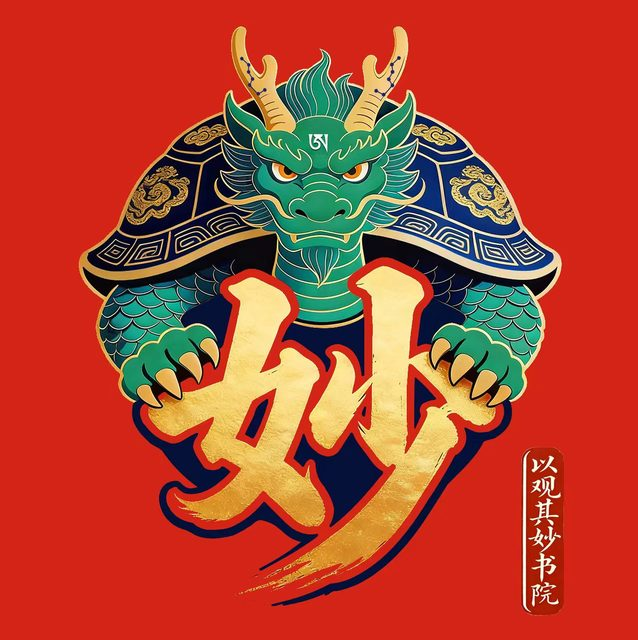

AI 工具唾手可得，人人都能成为"工具达人"。但夜深人静时，一个拷问始终浮现：当所有人都能用 AI 完成工作，我的独特性在哪里？
答案不在"术"的表层追逐，而在"道"的深层构建——你的认知框架、心性内核与价值准则，才是这个时代真正的根本竞争力。以观其妙书院，正是为回应这一时代命题而生。
一 · 书院是谁：穿透表象，直抵本质
以观其妙书院创立于 2019 年，名字源自《道德经》"故常无欲，以观其妙"——这是书院一切行动的核心指引：穿透表象，洞察事物的本质与规律。书院之名本身，就是一场象思维的实践：
洞察力与觉知力
不急着下判断，先看见正在发生什么——对事如此，对人如此，对自己更是如此。
事物的本来面目
不是你以为的样子，不是你希望的样子，是它本来的样子。
深层的逻辑与底层规律
表象之下的运行结构——抓住了它，变化表层的千姿百态就不再吓人。
我们并非传统的文化研习社，也不是单一的技能培训营。我们的定位清晰而独特：以中国传统文化智慧为根基，深度融合现代心理学、管理学、AI 等前沿学科，搭建"系统化、品牌化、可落地"的知识服务平台，孵化具备"传统文化底蕴＋现代专业能力＋AI 赋能"的超级个体。
使命 · 愿景 · 价值观
使命
以文载道，赋能超级个体。"文"是东西方智慧的结晶，"道"是个人成长与商业成功的底层逻辑。
愿景
成为超级个体信赖的古今智慧融合平台。我们不做知识的搬运工，专注智慧的融合与转化——将东方古老智慧与现代前沿学科深度结合，提供既扎根深厚、又锋利实用的认知武器与心性定力。
五大价值观：
融古通今
在速朽的时代，筑牢不焦虑的深厚根基。
观微知著
在信息的噪音中，修炼看见本质的洞察力。
知行合一
在"知道"与"做到"之间，搭建最短的桥梁。
妙启心智
在灌输的时代，点亮自己、启发他人。
博采精进
在变化的洪流中，保持持续进化的开放态。
二 · 我们深耕的五件事
企业文化 · 生生企业文化操作系统
以"文化不是组织的装饰品，而是组织的操作系统，它决定组织在动荡之中能否自我复现"为核心命题——以壳核之辨为公理、人民性（组织普惠性）为标尺、组织三体论为本体、五行生克为语言、企业家精神为原动力、AI 双螺旋为未来形态，经由"常、标、法、动、合"五字诀建构，使企业像文明一样相生不止、死而不亡、可以复建的企业文化理论—工程体系。
五行人格学
一门把人格看作木火土金水五种生命能量动态运行的东方人格心理学——以"一心三界五行九层象思维"识人，以"拔阴取阳、化克为生"转化，不止告诉你"你是谁"，更给你"如何成为更好的自己"的地图。
AI 原生组织
从战略、组织、流程、文化到产品都以 AI 为默认生产力底座重新设计、而非简单叠加 AI 工具的组织——核心是通过 AI 并行处理持续压缩传统科层制的串行瓶颈，让人升维为问题定义者与最终判断者。
象思维与思维模型
一套双层认知操作系统——象思维以前语言的整体直观为混沌问题「取象定性」，充当发号施令的调度层；思维模型以可计算的结构化工具将所取之象拆解执行，充当落地路径的执行层；二者通过「取象→择模→定序→验算」四步法上下协同，构成人驾驭问题、并与 AI 高效对话的完整心智框架。
心文化
引导个体从发现心的本质，到确信无疑，再到自信解脱。
三 · 谁在这背后：创始人

创始人 · 悟空（贾悦）
悟空（贾悦）
心文化实修者与传播者。以观其妙书院创始人，五行人格学创始人，AI 五行人格 OS、AI 龙龟共生 OS、AI 原生组织体系设计者，企业文化咨询师，心理咨询师。
北京大学心理学本科，中国科学院心理所应用心理学研究生；2010 年至今，学习践行并传播传统文化。
二十年只做一件事：把东方智慧里那些"只能意会、不好言传"的东西，翻译成现代人能用的工具。
已出版著作
- 《人人都要懂的九种个性——九型人格通俗版解读》｜机械工业出版社
- 《FBI 破解身体语言（图解版）》｜中华工商联合出版社
- 《FBI 破解性格密码（图解版）》｜武汉大学出版社
- 《九种个性与高效沟通》｜中国财富出版社
- 《识人·用人·带队伍——九种个性与团队建设》｜人民邮电出版社
系统著述 · 已成稿
- 《生生——企业文化操作系统》
- 《AI 龙龟共生伙伴操作系统》
- 《AI 原生组织》
- 《象与模型：象思维与思维模型》
- 《五行人格心理学》
四 · 核心主张
以心文化为根，重新回答三件事：
人，何以成人？
不是活成某个类型，是活成那个能观察、能转化、能选择的自己。
组织，何以成体？
不是把人管住，是让文化成为操作系统——动荡之中能自我复现。
智慧，何以传承？
不是搬运知识，是把只能意会的翻译成能用的工具。
这三个问题，是书院全部研究与著述的总纲——五大研究方向由此展开，五部系统著述由此写成，每一个咨询项目由此出发。
五 · 与你同行
如果你正在寻找——
对个人
一套融通古今的内在操作系统，从"追逐工具的劳动者"蜕变为"定义意义的创造者"。
对企业
一套可落地的企业文化与 AI 原生组织方案，让团队既有人性的温度，又有系统的效率。